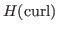
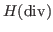

The mixed finite element method is a natural, conservation preserving, way to discretize large classes of partial differential equations (PDEs) that model physical processes of practical relevance in various fields of engineering, including fluid-dynamics, solid mechanics, and electromagnetism. Many applications of these models feature a multi-physics and multi-scale nature which poses substantial challenge to state-of-the-art solvers. Upscaling techniques can reduce computational cost and make repeated simulation feasible by solving accurate coarse scale models that incorporate the interactions at different scales.
Element-agglomeration based algebraic multigrid (AMGe) is shown to produce upscaled discretizations for wide classes of PDEs on general unstructured meshes, having the potential to be more accurate than classical upscaling techniques based on piecewise polynomials on practical computationally feasible (i.e., coarse enough) meshes. The AMGe approach, in fact, leads to operator-dependent coarse spaces and respective coarse models that possess the same stability and approximation properties as the original finite element discretization. Thanks to their guaranteed order of accuracy on arbitrary coarse meshes, these coarse spaces can then be employed as a discretization tool on a hierarchy of levels, which is useful in multilevel Monte Carlo simulations, as well as to construct robust algebraic multigrid (AMG) preconditioners.
In this talk, we will address the numerical solution of the upscaled coarse discretization of saddle point problems derived by element-agglomeration based coarse de Rham sequences. Two different approaches will be considered for the solution of the upscaled systems:

and
;This work is performed under the auspices of the U.S. Department of Energy by Lawrence Livermore National Laboratory under Contract DE-AC52-07NA27344.